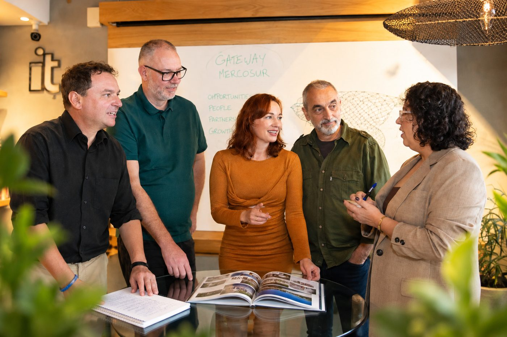
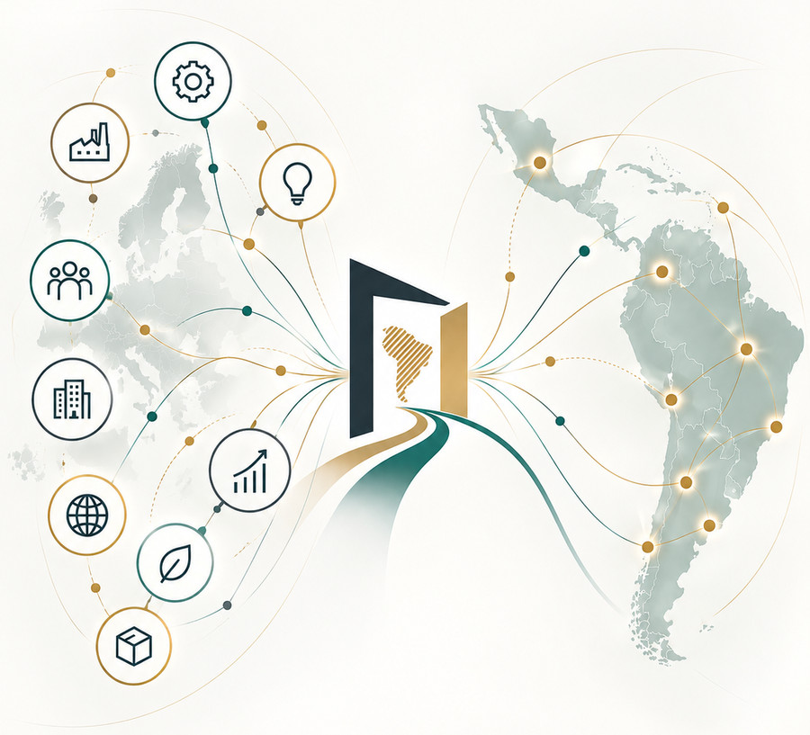
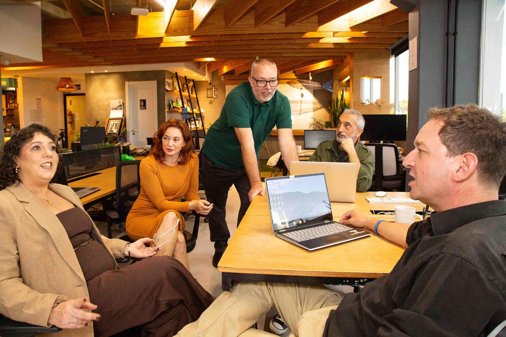

A cross-cultural team based in Florianópolis, Brazil, helping European SMEs expand across Mercosur and Latin America.
We understand the market. We understand the people. And we know that good strategy has to work in the real world.


We work with companies at different stages of their journey into Latin America.
Some are just starting to explore the region and need to understand where the opportunities are and what to expect. Others are already here through exports, distributors, local partners or their own operations, and are looking for ways to grow.
Wherever you are in the process, we help you understand the market, make informed decisions and turn your plans into something that works on the ground.
You don't have to figure out Latin America on your own.
Before we talk about markets, partners or growth strategies, we want to understand your business, your goals and what success actually looks like for you.
So we start by listening.
There is no one-size-fits-all approach to Latin America. Every company comes with different goals, resources, expectations and levels of risk. Understanding those first allows us to give advice that is not only strategically sound, but also realistic and useful for your particular situation.
Our team brings experience from both Europe and Latin America, across international management, business development, digital strategy, marketing, communication and localisation. We work in German, English, Spanish and Brazilian Portuguese, and bring different professional backgrounds and perspectives to the table.
That combination allows us to look at opportunities from different angles, connect strategy with practical execution and help you navigate the differences between European expectations and the realities of doing business in Latin America.
And we don't simply hand you a report and leave you to figure out the rest.
Some clients need clarity before taking their first step. Others already have something underway and need help moving it forward: finding the right partners, strengthening their local presence, developing new opportunities or adapting their communication to the market. We adapt our involvement to what your business actually needs.

We don't believe in ready-made solutions. We believe in finding what works for your business.
We are a cross-cultural team based in Florianópolis, southern Brazil, with roots in Germany, Romania, the UK and Brazil.
Our team brings experience from both sides of the Atlantic: from building and developing businesses in Latin America to working with international companies on communication, marketing, digital strategy and market development.
We know that entering a new market is about more than understanding the numbers. It also means understanding how people communicate, how relationships are built, what customers expect and what may need to change when a European company enters a Latin American market.
That's where we can help.
It's not just about translating your message. It's about making sure your business, your brand and your communication make sense to the people you want to reach.
Tell us where you want to grow and we'll give you an honest view of what it takes, including the parts that may be harder than they look.